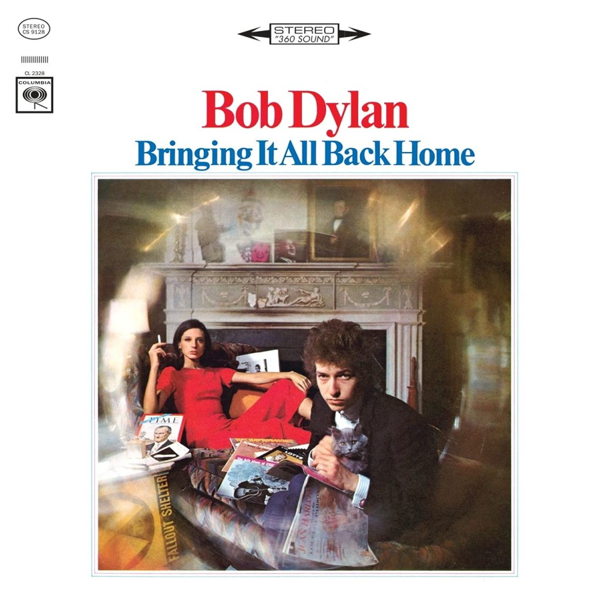
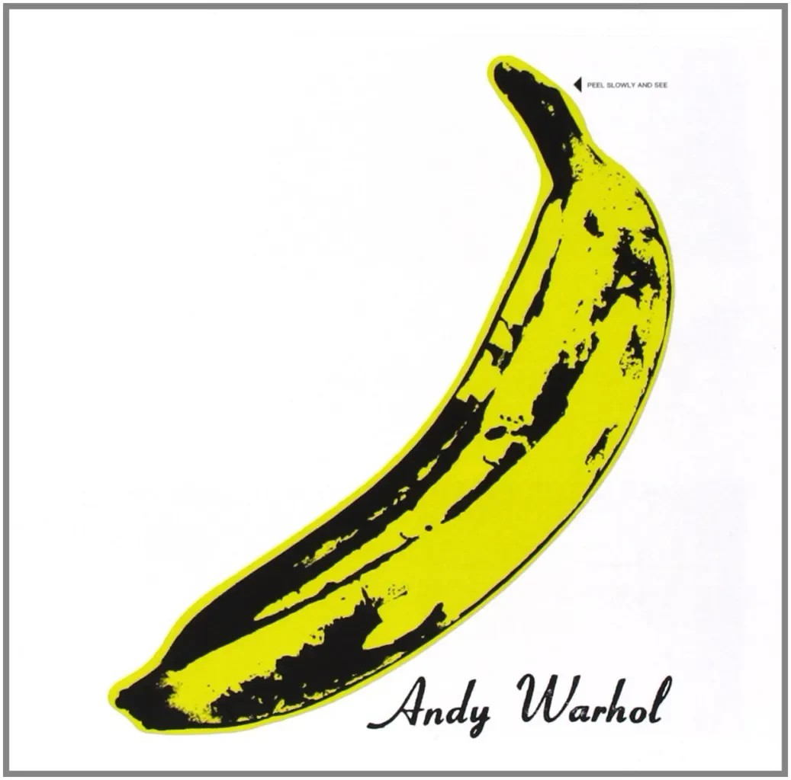
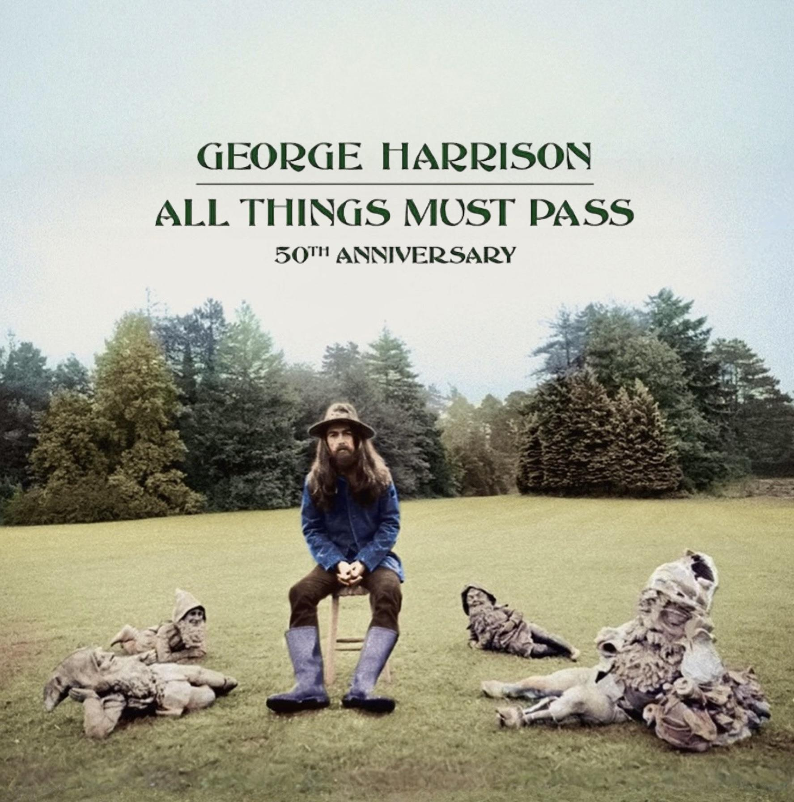
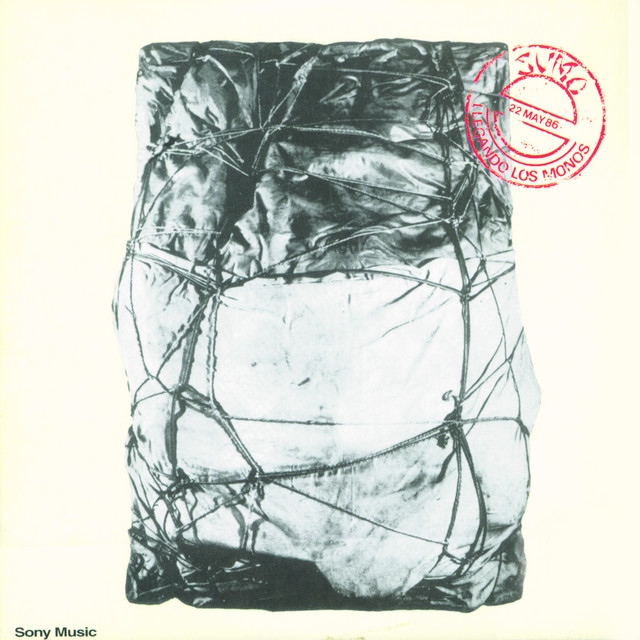
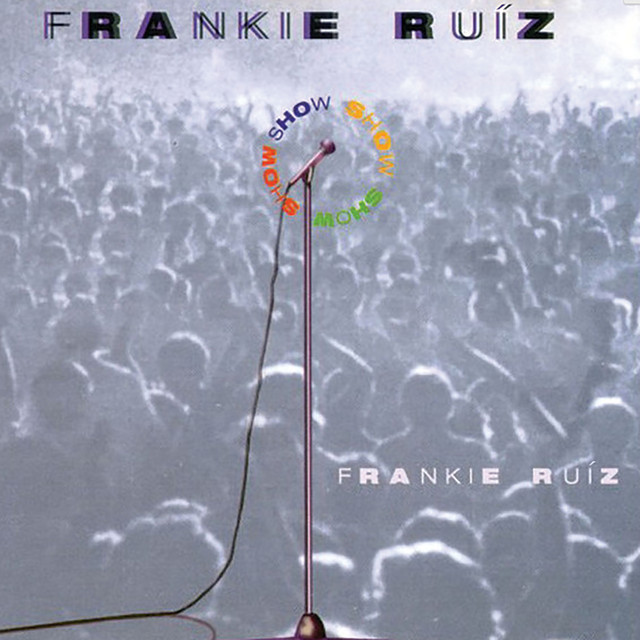
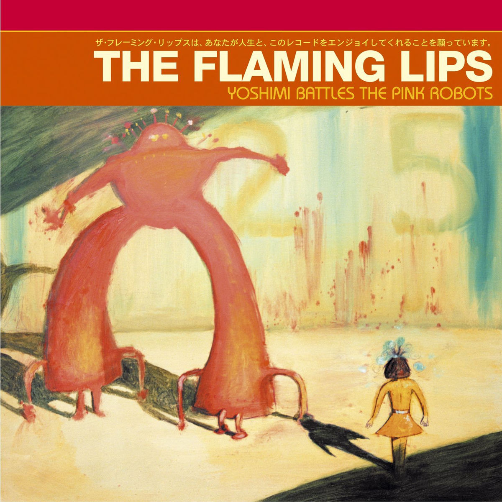
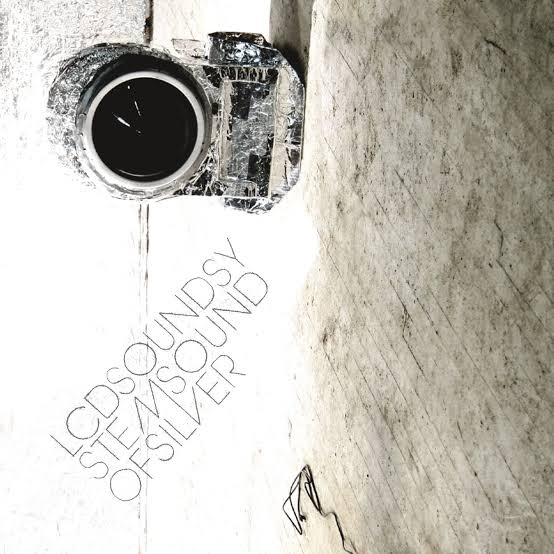
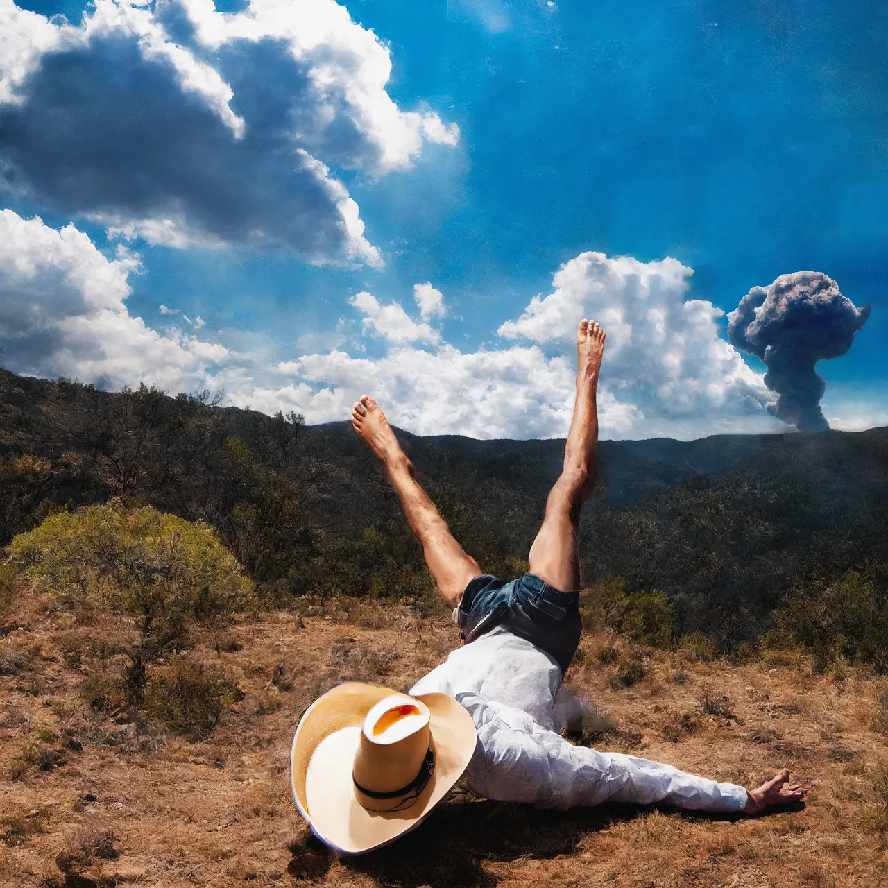

Archive
1960 — 2026
Una colección abierta de artistas, discos y momentos para volver a escuchar.

1965 Bringing It All Back Home ↗
1967 The Velvet Underground & Nico ↗
1970 All Things Must Pass ↗ 1973
Artaud
↗
1973
Artaud
↗

1986 Llegando los Monos ↗
1996 Show ↗ 1998
In the Aeroplane Over the Sea
↗
1998
In the Aeroplane Over the Sea
↗

2002 Yoshimi Battles the Pink Robots ↗
2007 Sound of Silver ↗ 2018 Some Rap Songs ↗ 2019
Titanic Rising
↗
2019
Titanic Rising
↗

2023 3D Country ↗ 2023
Secret Life
↗
2023
Secret Life
↗
 2026
Reality Awaits
↗
2026
Reality Awaits
↗
No hay entradas en esta categoría por ahora.